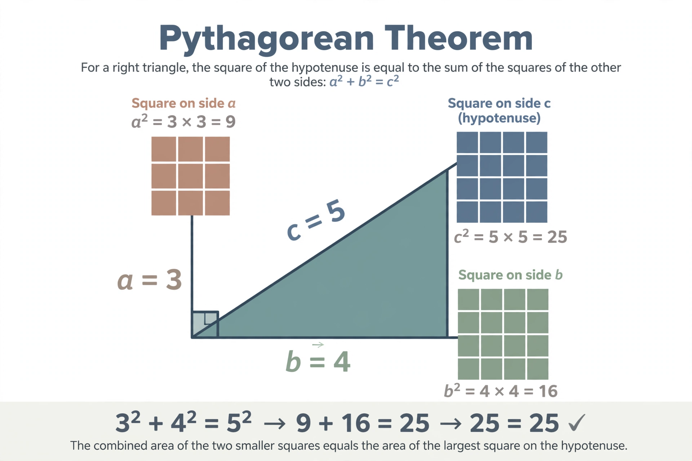

Introduction
Mathematics is an area of knowledge that includes the study of numbers (arithmetic and number theory), formulas and related structures (algebra), shapes and the spaces in which they are contained (geometry), and quantities and their changes (calculus and analysis). It developed from counting, calculation, measurement and the systematic study of shapes and motions, and uses pure reason and proof to establish truths.
Selected article

[Image: a tiling of triangles and squares illustrating the Pythagorean theorem]The Pythagorean theorem states that in a right-angled triangle, the square of the hypotenuse equals the sum of the squares of the other two sides: a² + b² = c². Known in some form to several ancient cultures, it is one of the most famous results in mathematics and has hundreds of distinct proofs.
Did you know...
- ... that pi is an irrational — indeed transcendental — number whose decimal expansion never repeats?
- ... that prime numbers become less common as numbers grow, yet there are infinitely many of them, as Euclid proved?
- ... that the word "algebra" derives from the title of a 9th-century book by al-Khwarizmi?
Branches
- Foundations: Set theory · Logic · Category theory
- Number: Number theory · Arithmetic
- Structure: Algebra · Group theory · Linear algebra
- Space: Geometry · Topology · Trigonometry
- Change: Calculus · Differential equations · Analysis
- Applied: Probability · Statistics · Computer science
Selected biography
Isaac Newton (1643–1727) and Gottfried Wilhelm Leibniz independently developed calculus. Other landmark figures include Euclid, Leonhard Euler, Carl Friedrich Gauss and Emmy Noether.